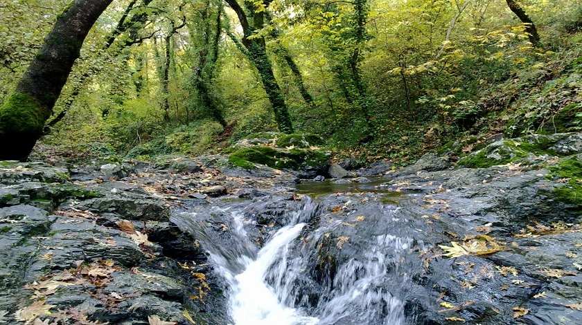
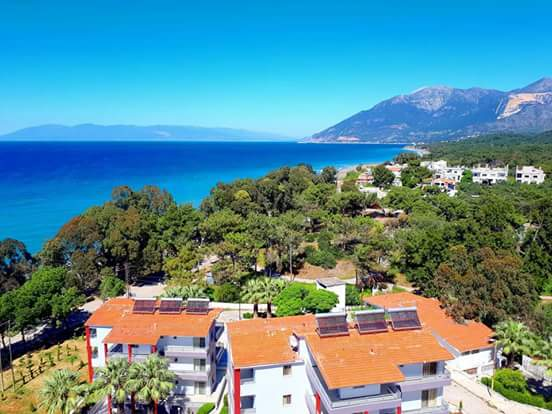
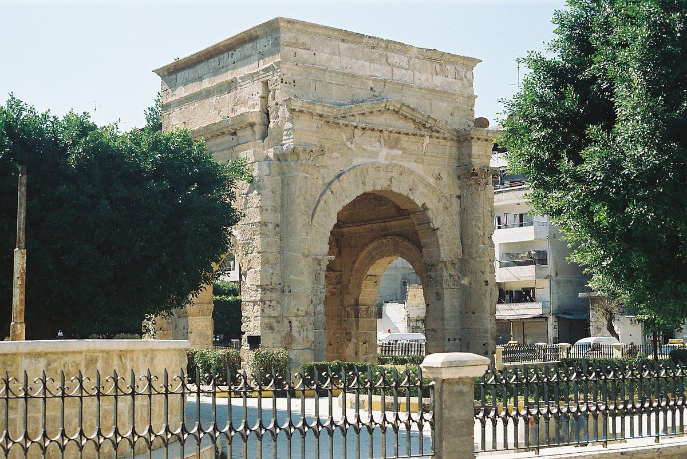
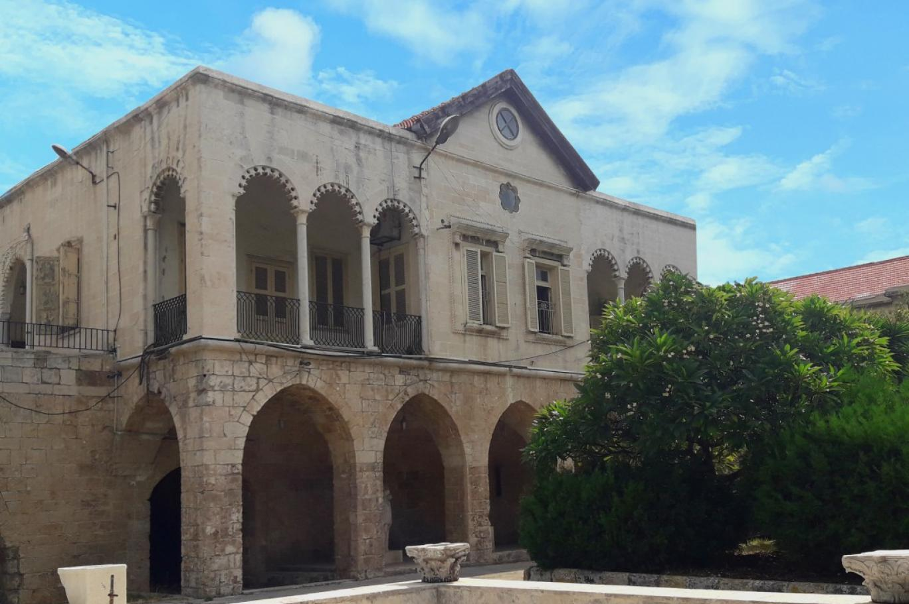

محافظة اللاذقية محافظة سورية تقع شمال غرب سوريا تطل على البحر الأبيض المتوسط وفيها ميناء كبير ومعظم أراضيها تغطيها الغابات والبساتين ويبلغ مساحة محافظة اللاذقية 2297 كم ويبلغ عدد قرى محافظة 500 قرية و لها حدود مع تركيا ومع محافظة إدلب و محافظة حماة ومحافظة طرطوس تشتهر محافظة اللاذقية بجمال طبيعتها وطيبة سكانها حيث تتموضع الكثير من البلدات والقرى والمصايف في أحضان الجبال الخضراء التي تكسوها الغابات الطبيعية وأشجار الفاكهة والبساتين
معالم اثرية في اللاذقية : قوس النصر
غابات الفرلق
رأس البسيط
المتحف الوطني
   